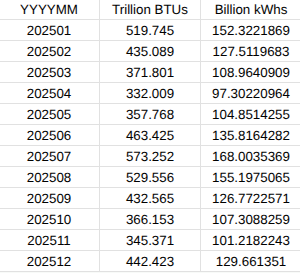
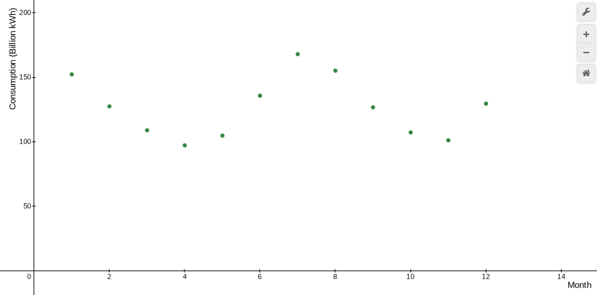
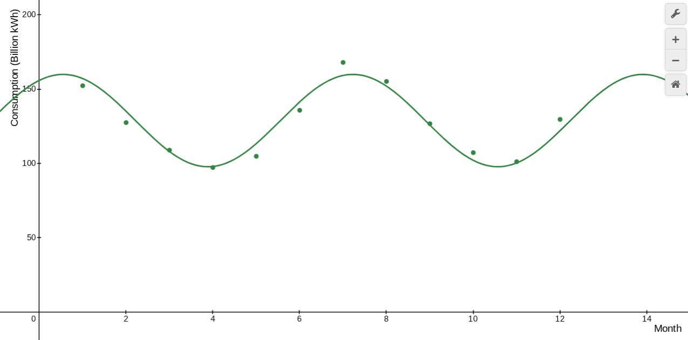

Defining Variables
- P(m) is the power used by residential homes based on m (month)
- m is the month (represented 1 - 12)
Obtaining Data
Using data from the Energy Information Administration (EIA) we were able to obtain data for Electricity Sales to Ultimate Customers in the Residential Sector (Total amount of power consumed by private households that has been consumed and not resold) from Jan 2025 to Dec 2025.
Here is the Raw Data:

Using a conversion factor of 0.293071, we converted Trillion BTUs to Billion kWhs.
Data Plotting and Regression
Next we plot our data into Desmos and get the graph

Then we ran a regression, after testing many, we found that a sinusoidal regression is the best fit, as it has the highest coefficient of determination (R^2), meaning that it is the best fit for our data.
Our equation is then such

Calculating Total Power Use
We can now integrate the function, our x-axis is time in months, while the y-axis is power consumption per month, Billion kWh/month. By integrating, we multiply these units to get Billion kWh/month * month, which gives up Billion kWh, our total energy consumption for a specific time period. If we integrate from 0 to 12, we get the total power consumption of the whole year.
This translates to a residential sector annual power use of roughly 1.53 Trillion kWh
Accounting for Less-Than-Ideal Conditions
Next we have to consider the median utility-scale solar capacity factor. In layman’s terms, this tells us that a solar grid, through the whole year, will only make about 24.7% (From the EIA of the power that it would make if it was making full power all day everyday for a full year. The reason this number is so low is because of nighttime, bad weather, and seasons, which all negatively affect a solar panel’s performance.
The total production needed for a solar panel grid (in Trillions of kWh) would then be
This is roughly 6.2 Trillion kWh
To get the solar panel capacity needed we then need to divide our yearly energy use by the amount of hours in a year to yield a kW figure.
This yields us about 707.8 million kW, which is about 707.8 GigaWatts
Final Cost Calculations
Now that we have our total solar capacity, we can now calculate the power generation infrastructure cost. For UPV (Utility-Scale Photovoltaic) systems, which are used in large grid systems, combined with batteries for power storage at night, it would cost about $1.71 per Watt This translates to about 1.21 trillion dollars in total panel and battery infrastructure costs.
In short, the total cost to build a solar panel grid capable of storing energy for low light conditions and supplying power for the entire US would cost approximately 1.21 trillion US dollars.